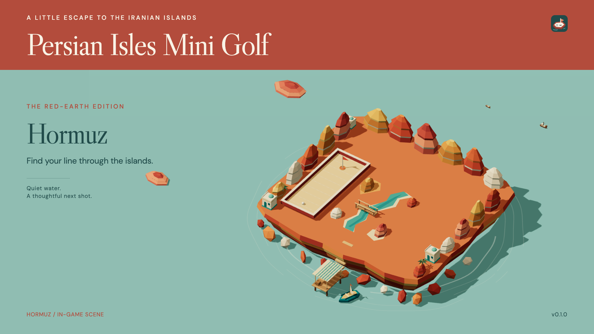
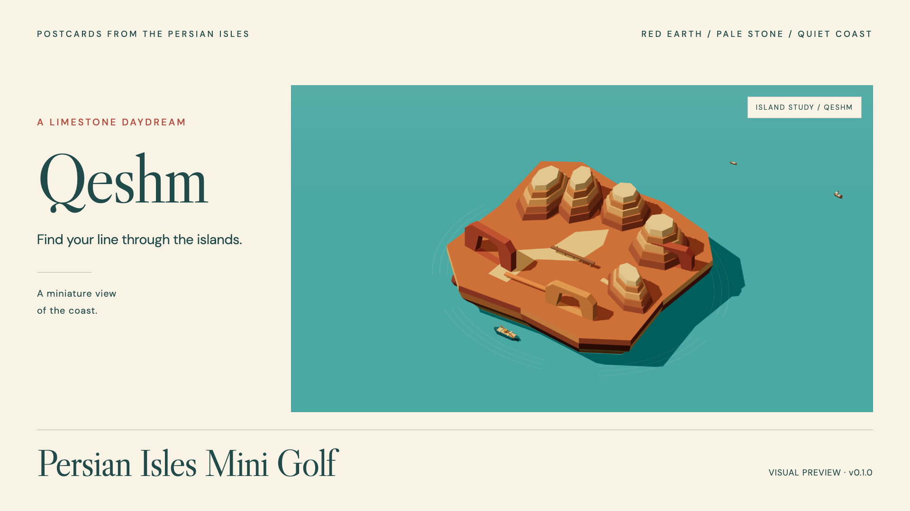
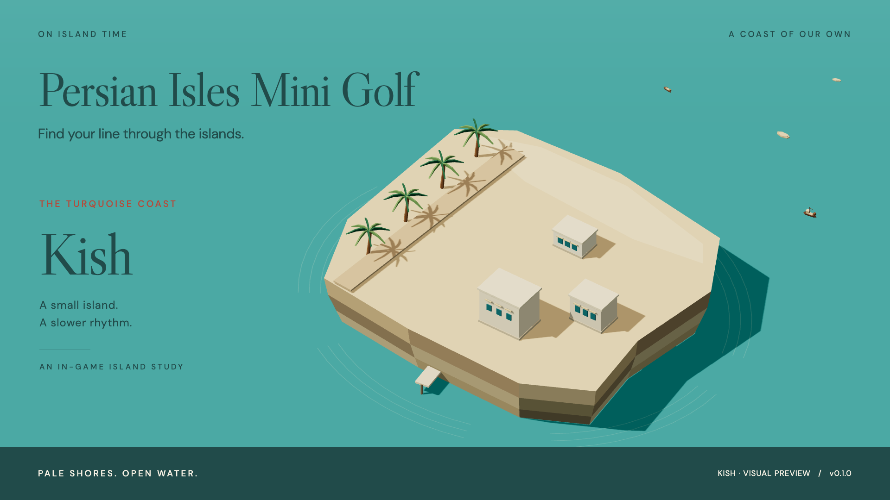

Find your line through the islands.Three downloadable 16:9 covers · 1920 × 1080 PNG · editable, self-contained HTML.

Actual Hormuz scene · playable course

Actual Qeshm scene · visual preview

Actual Kish scene · visual preview